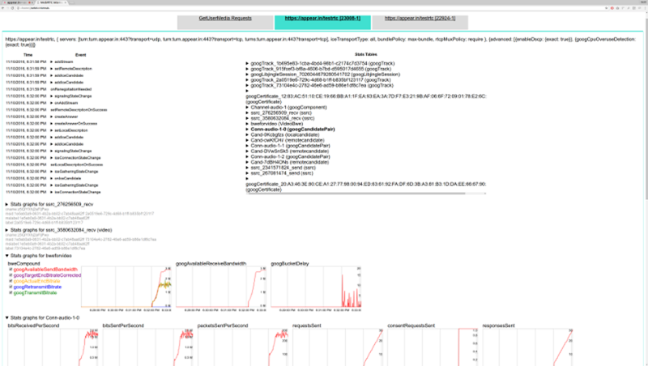
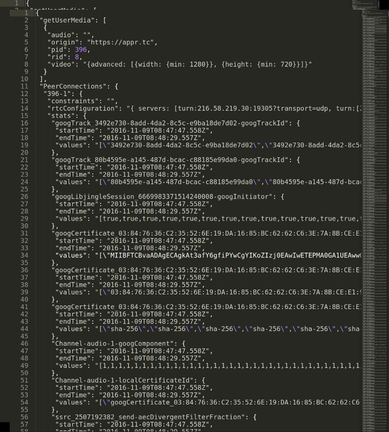
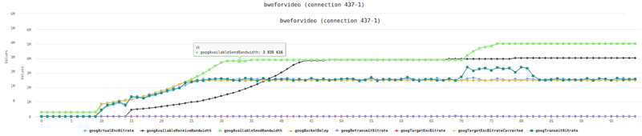
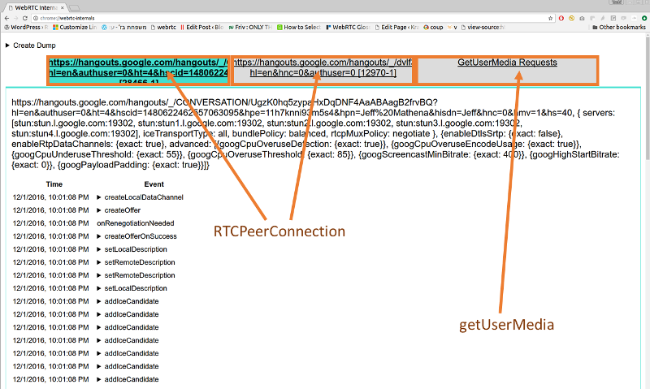
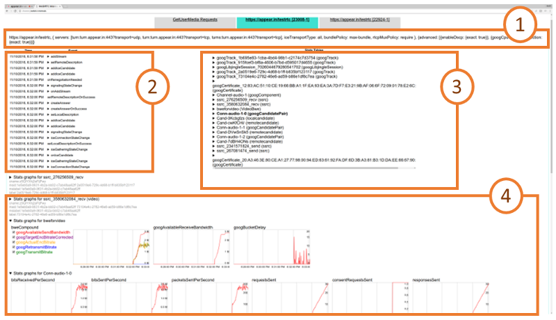
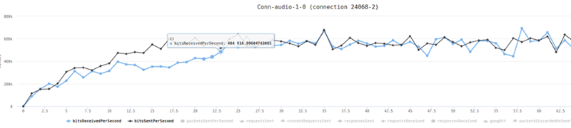
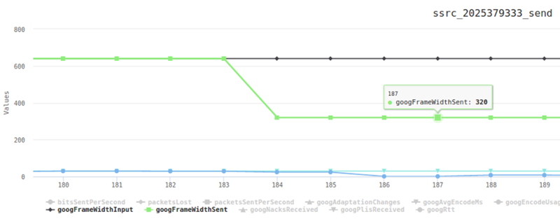
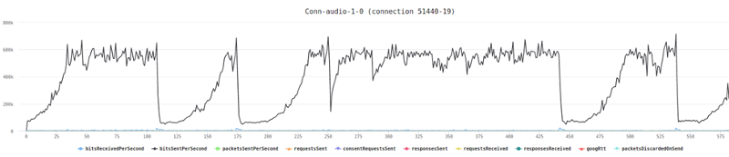

To make this one as accurate as possible, I decided to go to my source of truth for the low level stuff related to WebRTC – Philipp Hancke, also known as fippo or hcornflower. This in a way, is a joint article we’ve put together.
webrtc-internals is a great tool when you need to find issues with your WebRTC product. Be it because you are trying to test WebRTC and need to debug an issue or because you’re trying to tweak with your configuration.
How to obtain a webrtc-internals stats dump?
If you aren’t familiar with this tool, then open a WebRTC session in your Chrome browser, and while in that session, open another tab and direct it to this “internal” URL: chrome://webrtc-internals/

Do it. We will be here waiting.
webrtc-internals allows downloading the trace as a large JSON thingy that you can layer look at, but when you do, you’ll see something like this:

Visualizing webrtc-internals stats
One of the first thing people start asking is – what exactly do these numbers say? It is what one of our own testers said the moment we’ve taken the code Fippo contributed to the community that enables shoving all these values into a time series graph and filtering them out.
This gives us graphs which are much larger than the 300×140 pixels from webrtc-internals:

The graphs are made using the HighCharts library and offer quite a number of handy features such as hiding lines, zooming into an area of interest or hovering to find out the exact value. This makes it much easier to reason about the data than the JSON dump shown above.
Back to the basic webrtc-internals page. At the top of this page we can see a number of tabs, one for all getUserMedia calls and one tab for each RTCPeerConnection.

On the GetUserMedia Requests tab we can see each call to getUserMedia and the constraints passed to it. We don’t get to see the results unfortunately or the ids of the MediaStreams acquired.
RTCPeerConnection stats
For each peerconnection, we can see four things here:

- How the RTCPeerConnection was configured, i.e. what STUN and TURN servers are used and what options are set
- A trace of the PeerConnection API calls on the left side. These API traces show all the calls to the RTCPeerConnection object and their arguments (e.g. createOffer) as well as the callbacks and event emitters like onicecandidate.
- The statistics gathered from the getStats() API on the right side
- Graphs generated from the getStats() API at the bottom
The RTCPeerConnection API traces are a very powerful tool that allows for example reasoning about the cause of ICE failures or can give you insights where to deploy TURN servers. We will cover this at length in a future blog post.
The statistics shown on webrtc-internals are the internal format of Chrome. Which means they are a bit out of sync with the current specification, some names have changed as well as the structure. At a high level, what we see on the webrtc-internals page is similar to the result we get from calling
This is an array of (legacy) RTCStatsReport objects which have a number of keys and values which can be accessed like this:
Keep in mind that there are quite a few differences between these statistics (which chrome currently exposes in getStats) and the specification. As a rule of thumb, any key name that ends with “Id” contains a pointer to a different report whose id attribute matches the value of the key. So all of these reports are connected to each other. Also note that most values are string even if they look like numbers of boolean values.
The most important attribute of the RTCStatsReport is the type of the report. There are quite a few of them:
- googTrack
- googLibjingleSession
- googCertificate
- googComponent
- googCandidatePair
- localCandidate
- remoteCandidate
- ssrc
- VideoBWE
Lets drill down into these reports.
googTrack and googLibjingleSession reports
The googTrack and googLibjingleSession don’t contain much information so we’ll skip them.
googCertificate report
The googCertificate report contains some information about the DTLS certificate used by the local side and the peer such as the certificate itself (encoded as DER and wrapped in base64 which means you can decode it using openssls x509 command if you want to), the fingerprint and the hash algorithm. This is mostly as specified in the RTCCertificateStats dictionary.
googComponent report
The googComponent report is acting as a glue between the certificate statistics and the connection. It contains a pointer to the currently active candidate pair (described in the next section) as well as information about the ciphersuite used for DTLS and the SRTP cipher.
googCandidatePair report
A report with a type of googCandidatePair describes a pair of ICE candidates, i.e. the low-level connection. From this report you can get quite some information such as:
- The overall number of packets and bytes sent and received (bytesSent, bytesReceived, packetsSent; packetsReceived is missing for unknown reasons). This is the raw UDP or TCP bytes including RTP headers
- Whether this is the active connection (googActiveConnection is “true” in that case and “false” otherwise). Most of the time you will be interested only in the statistics of the active candidate pair. The spec equivalent can be found here
- The number of STUN request and responses sent and received (requestsSent and responsesReceived; requestsReceived and responsesSent) which count the number of incoming and outgoing STUN requests that are used in the ICE process
- The round trip time of the last STUN request, googRtt. This is different from the googRtt on the ssrc report as we will see later
- The localCandidateId and remoteCandidateId which point to reports of type localCandidate and remoteCandidate which describe the local and remote ICE candidates. You can still see most of the information in the googLocalAddress, googLocalCandidateType etc values
- googTransportType specifies the transport type. Note that the value of this statistics will usually be ‘udp’, even in cases where TURN over TCP is used to connect to a TURN server. This will be ‘tcp’ only when ICE-TCP is used
There are a couple of things which are easily visualized here, like the number of bytes sent and received:

localCandidate and remoteCandidate reports
The localCandidate and remoteCandidate are thankfully as described in the specification, telling us the ip address, port number and type of the candidate. For TURN candidates this will soon also tell us over which transport the candidate was allocated.
Ssrc report
The ssrc report is one of the most important ones. There is one for each audio or video track sent or received over the peerconnection. It is the old version of what the specification calls MediaStreamTrackStats and RTPStreamStats. The content depends quite a bit on whether this is an audio or video track and whether it is sent or received. Let us describe some common elements first:
- The mediaType describes whether we are looking at audio or video statistics
- The ssrc attribute specifies the ssrc that media is sent or received on
- googTrackId identifies the track that these statistics describe. This id can be found both in the SDP as well as the local or remote media stream tracks. Actually this is violating the rule that anything named “…Id” is a pointer to another report. Google got the goog stats wrong

- googRtt describes the round-trip time. Unlike the earlier round trip time, this is measured from RTCP
- transportId is a pointer to the component used to transport this RTP stream. Usually (when BUNDLE) is used this will be the same for both audio and video streams
- googCodecName specifies the codec name. For audio this will typically be opus, for video this will be either VP8, VP9 or H264. You can also see information about what implementation is used in the codecImplementationName stat
- The number of bytesSent, bytesReceived, packetsSent and packetsReceived (depending on whether you send or receive) allow you to calculate bitrates. Those numbers are cumulative so you need to divide by the time since you last queried getStats. The sample code in the specification is quite nice but beware that Chrome sometimes resets those counters so you might end up with negative rates.
- packetsLost gives you an indication about the number of packets lost. For the sender, this comes via RTCP, for the receiver it is measured locally. This is probably the most direct indicator you want to look at when looking at bad call quality
Voice specific
For audio tracks we have the audioInputLevel and audioOutputLevel respectively (the specification calls it audioLevel) which gives an indication whether an audio signal is coming from the microphone (unless it is muted) or played through the speakers. This could be used to detect the infamous Chrome audio bug. Also we get information about the amount of Jitter received and the jitter buffer state in googJitterReceived and googJitterBufferReceived.
Video specific
For video tracks we get two major pieces of information. The first is the number of NACK, PLI and FIR packets sent in googNacksSent, googPLIsSent and googFIRsSent (and their respective Received) variants. This gives us an idea about how packet loss is affecting video quality.
More importantly, we get information about the frame size and rate that is input (googFrameWidthInput, googFrameHeightInput, googFrameRateInput) and actually sent on the network (googFrameWidthSent, googFrameHeightSent, googFrameRateSent).
Similar data can be gathered on the receiving end in the googFrameWidthReceived, googFrameHeightReceived statistics. For the frame rate we even get it split up between the googFrameRateReceived, googFrameRateDecoded and googFrameRateOutput.
On the encoder side we can observe difference between these values and get even more information about why the picture is scaled down. Typically this happens either because there is not enough CPU or bandwidth to transmit the full picture. In addition to lowering the frame rate (which could be observed by comparing differences between googFrameRateInput and googFrameRateSent) we get extra information about whether the resolution is adapted because of CPU issues (then googCpuLimitedResolution is true then — mind you that it is the string true, not a boolean value in Chrome’s current implementation) and if it is because the bandwidth is insufficient then googBandwidthLimitedResolution will be true. Whenever one of those conditions changes, the googAdaptionChanges counter increases.
We can see such a change in this diagram:

Here, packet loss is artificially generated. In response, Chrome tries to reduce the resolution first at t=184 where the green line showing the googFrameWidthSent starts to differ from the googFrameWidthInput shown in black. Next at t=186 frames are dropped and the input frame rate of 30fps (shown in light blue) is different from the frame rate sent (blue line) which is close to 0.
In addition to these standard statistics, Chrome exposes a large number of statistics about the behaviour of the audio and video stack on the ssrc report. We will discuss them in a future post.
VideoBWE report
Last but not least the VideoBWE report. As the name suggests, it contains information about the bandwidth estimate that the peerconnection has. But there is quite a bit more useful information contained in this report:
- googAvailableReceiveBandwidth – the bandwidth that is available for receiving video data
- googAvailableSendBandwidth – the bandwidth that is available for sending video data
- googTargetEncBitrate – the target bitrate of the the video encoder. This tries to fill out the available bandwidth
- googActualEncBitrate – the bitrate coming out of the video encoder. This should usually match the target bitrate
- googTransmitBitrate – the bitrate actually transmitted. If this is very different from the actual encoder bitrate, this might be due to forward error correction
- googRetransmitBitrate – this allows measuring the bitrate of retransmits if RTX is used. This is usually an indication of packet loss.
- googBucketDelay – is a measure for Google’s “leaky bucket” strategy for dealing with large frames. Should be very small usually
As you can see this report gives you quite a wealth of information about one of the most important aspects of the video quality – the available bandwidth. Checking the available send and receive bandwidth is often the first step before diving deeper into the ssrc reports. Because sometimes you might find behaviour like this which explains ‘bad quality’ complaints from users:

In this case “the bandwidth estimate dropped all the time” is a pretty good explanation for quality issues.
What’s next?
That’s a small part of what you can glean out of webrtc-internals. There’s more to it, which means Fippo and I will be churning out more posts in this serie of articles about webrtc-internals. If you are interested in keeping up with us, you might want to consider subscribing.
Huge thanks for Fippo in assisting with this one!
Anton Klein says: 2018-07-26 00:04:00
Hi,
has anyone seen a table with resolution and min. required bitrate? We would like to avoid googBandwidthLimitedResolution and check the available bandwidth before “call” starts, but we do not have a reference table with resolutions and required bitrates to reduce the resolution to an acceptable level before call.
Tsahi Levent-Levi says: 2018-07-26 00:08:00
Anton,
This would be a trial and error thing, where you won’t get to the numbers you wish to find easily. Different browsers may have different tables for such data, which will also differ based on the codec, frame rate requested and a myriad of other parameters. It may also change across versions of the same browser.
The notion is that the browser should do its best to decide what resolution to use at what bitrate, though I am assuming that isn’t always the case.
Maria Fernandez (elbecita) says: 2018-07-18 17:51:00
This article is spot on! Thank you very much, it has helped me a lot. I have a question very much related to video stats:
Imagine I have someone streaming video, and their viewers start to see a quality degradation. Let’s say this is because a buggy connection (packet loss, latency, etc) on the presenter side. I am trying to identify this, based on the presenter stats. So far I think the best metrics I got are the frame rate input and the frame rate sent. I am using this rule: if for some X time the (frameRateSent / frameRateInput) falls below 0.5 (means frame rate is being reduced by half or less for some amount of time, without recovering), I consider the presenter really is in a bad connection and I do take some action (I could think he’s on a VPN with many UDP packets loss and I could force a webrtc reconnection on turn tcp mode for instance, but that is for another discussion).
What do you think? I’ve played with plis and firs and nacks, but I don’t find that easy to determine when is the moment to take action…
Tsahi Levent-Levi says: 2018-07-20 16:43:00
Maria,
Everyone I know is developing and defining their own specialized heuristics on this one.
We’re leaning towards the values of bitrate, framerate, packet loss and jitter. We’re also in the process of introducing it as an integral part of testRTC – giving media scoring to test runs.
Jinchen says: 2018-07-05 03:03:00
Hi
Could you please explain what is the following two parameters means?
googAvgEncodeMs and googEncodeUsagePercent, seems they are missing in this blog..
Thanks a lot!
Tsahi Levent-Levi says: 2018-07-05 08:38:00
Jinchen,
I am not an expert in each and every of these parameters, but here’s my guess about these two:
googAvgEncodeMs – the time it takes for the encoder on average to encode a frame. If this is video, and you’re doing 30 fps, it should be lower than 30 millisecond to be able to cope with the throughput
googlEncodeUsagePercent – how much of the CPU is being invested in encoding
For the most part, you won’t be needing to look this further down into the internals of WebRTC.
dula says: 2017-11-09 12:58:00
Hi,
Can we generate Ssrc report for the android native webRTC application,
Tsahi Levent-Levi says: 2017-11-09 15:10:00
Sure. You’ll need to dig into the code and capture the APIs that handle the RTCP stats reporting.
Ray says: 2017-08-27 22:33:00
I am trying this but apparently it is not really working? All i see is a Create Dump. When I click it, all I see it:
{
“getUserMedia”: [
{
“audio”: “”,
“origin”: “https://192.168.0.16:9001”,
“pid”: 2592,
“rid”: 19,
“video”: “{width: {exact: 1024}, height: {exact: 768}, aspectRatio: {ideal: 1.77}}”
},
{
“audio”: “”,
“origin”: “https://192.168.0.16:9001”,
“pid”: 2592,
“rid”: 19,
“video”: “{width: {exact: 1024}, height: {exact: 768}, aspectRatio: {ideal: 1.77}}”
},
{
“audio”: “”,
“origin”: “https://192.168.0.16:9001”,
“pid”: 2592,
“rid”: 19,
“video”: “{width: {exact: 1024}, height: {exact: 768}, aspectRatio: {ideal: 1.77}}”
},
{
“audio”: “”,
“origin”: “https://192.168.0.16:9001”,
“pid”: 2592,
“rid”: 19,
“video”: “{width: {exact: 1024}, height: {exact: 768}, aspectRatio: {ideal: 1.77}}”
},
{
“audio”: “”,
“origin”: “https://192.168.0.16:9001”,
“pid”: 2592,
“rid”: 19,
“video”: “{width: {exact: 1024}, height: {exact: 768}, aspectRatio: {ideal: 1.77}}”
},
{
“audio”: “”,
“origin”: “https://192.168.0.16:9001”,
“pid”: 2592,
“rid”: 19,
“video”: “{width: {exact: 1024}, height: {exact: 768}, aspectRatio: {ideal: 1.77}}”
},
{
“audio”: “”,
“origin”: “https://192.168.0.16:9001”,
“pid”: 2592,
“rid”: 19,
“video”: “{width: {exact: 1024}, height: {exact: 768}, aspectRatio: {ideal: 1.77}}”
}
],
“PeerConnections”: {},
“UserAgent”: “Mozilla/5.0 (Windows NT 6.1; Win64; x64) AppleWebKit/537.36 (KHTML, like Gecko) Chrome/60.0.3112.101 Safari/537.36”
}
What am I missing here?
Tsahi Levent-Levi says: 2017-08-27 22:55:00
Latest Chrome versions require opening the webrtc-internals dump before anything else you do on another tab with WebRTC in order to “catch” the API calls.
It might be it.
It might also be the fact that there’s no media flowing?
Mir Nar says: 2017-02-14 18:14:00
Hello,
I would like to get to know more about:
googCurrentDelayMs
googJitterBufferMs
googJitterReceived
googPreferredJitterBufferMs
Can you please point me to the right source of information regarding this?
Sam Joseph says: 2017-07-19 23:26:00
I also have similar questions. What does currentDelay really mean?
WebRTC RTCPeerConnection. One to rule them all, or one per stream? • BlogGeek.me says: 2017-01-09 12:00:00
[…] you are following the series of articles Fippo wrote with me on testRTC about how to read webrtc-internals, then you should know a thing or two about its […]
RealTimeWeekly | RealTimeWeekly #159 says: 2016-12-12 12:03:00
[…] What do the Parameters in webrtc-internals Really Mean? […]